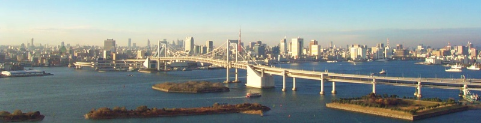
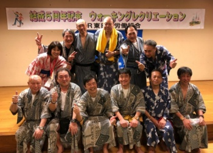

本部「結成５周年記念 ウォーキングレクリエーション」

2018年5月10日、JR東日本労働組合結成５周年記念ウォーキングレクリエーションが開催されました。あいにくの雨の中、東京地本からは１０名が参加し、出発地点の田町駅からゴールのお台場「大江戸温泉物語」まで歩き通しました。そして温泉につかり、交流を深めてきました。
11時に田町駅を出発するときは本降りの雨でしたが、昼には雨も上がるという天気予報を信じて出発しました。しかし、楽しみにしていたレインボーブリッジを渡る頃には雷まで鳴り出し、濡れた衣服は体温を奪っていきます。絶景のはずの景色も雨に煙って、ゴール後の温泉を楽しみに歩きました。
歩き続けて１時間半あまり、大江戸温泉物語に到着し、温泉に浸かり体を温めた後で交流会がスタートしました。

交流会は190名余りの組合員が参加し、盛大に開催されました。そして、メインイベントの大抽選会で盛り上がりは最高潮を迎えました。全地方本部がそれぞれ持ち寄った各地の名産品を巡っての抽選に、一喜一憂する姿があちらこちらで見られました。東京地本も３名が見事景品をゲットすることができました。
交流会が終わって外に出た頃には見事な快晴となり、晴れ晴れとした気分で帰途につきました。準備していただいた中央本部の皆さん、ありがとうございました。参加された組合員の皆さんお疲れ様でした。